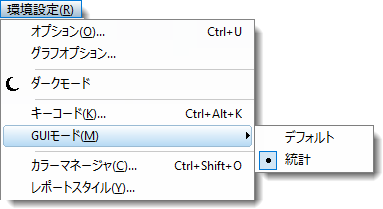
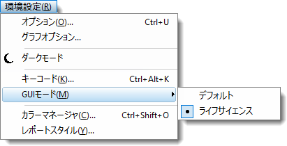

メニューやボタンが見つからない場合、またはOriginLab社のドキュメントの手順に従いにくい場合は、
Origin では、インストール時に3つのGUIモードを選択できます。
そのため...
メニューやボタンが見つからない場合、またはOriginLab社のドキュメントの手順に従いにくい場合は、 |
| 統計モードでインストールした場合... | ライフサイエンスモードでインストールした場合... |
|---|---|
 |
 |
デフォルトモードに切り替えるには、メニュー環境設定:GUIモード:デフォルトを選択します。
メインメニュー横の検索バーにメニュー名またはボタン名を入力して、関連するメニューやボタンなどを検索します。